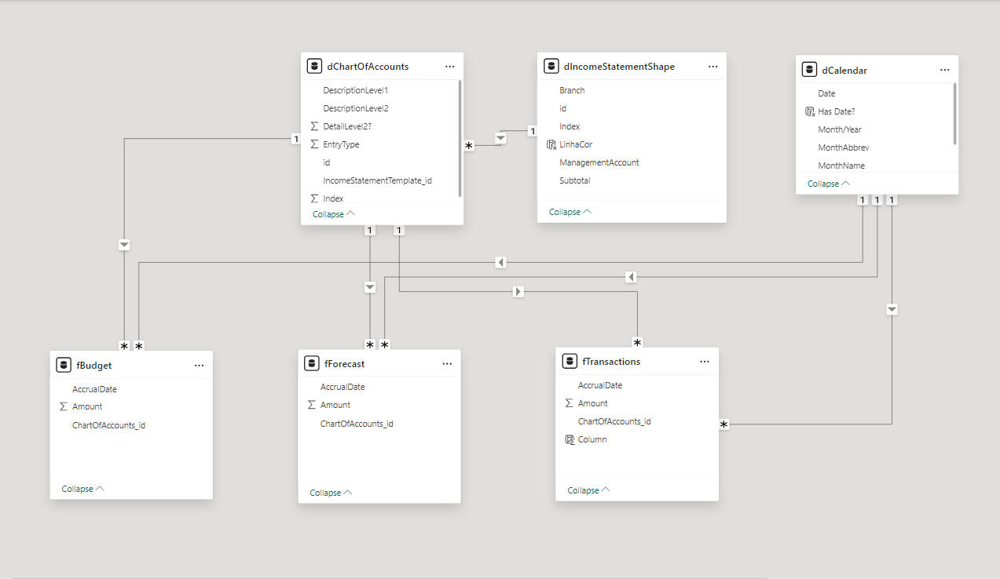
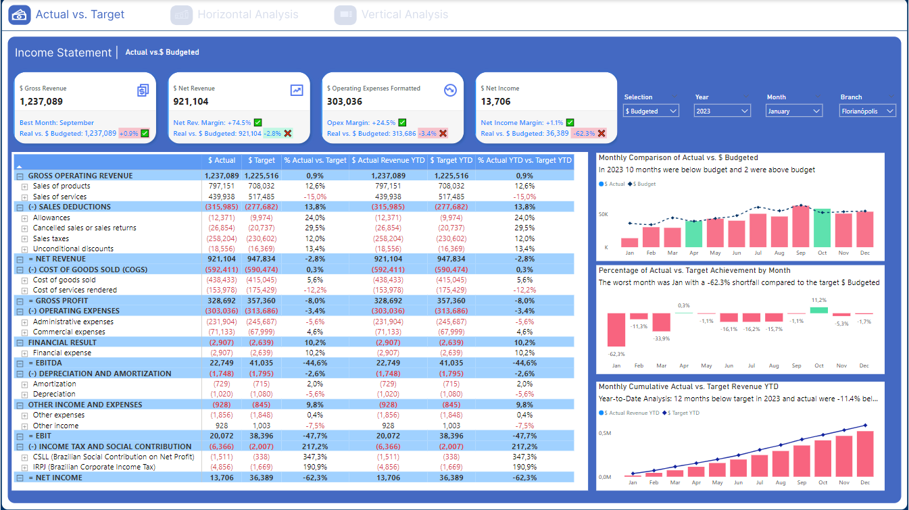
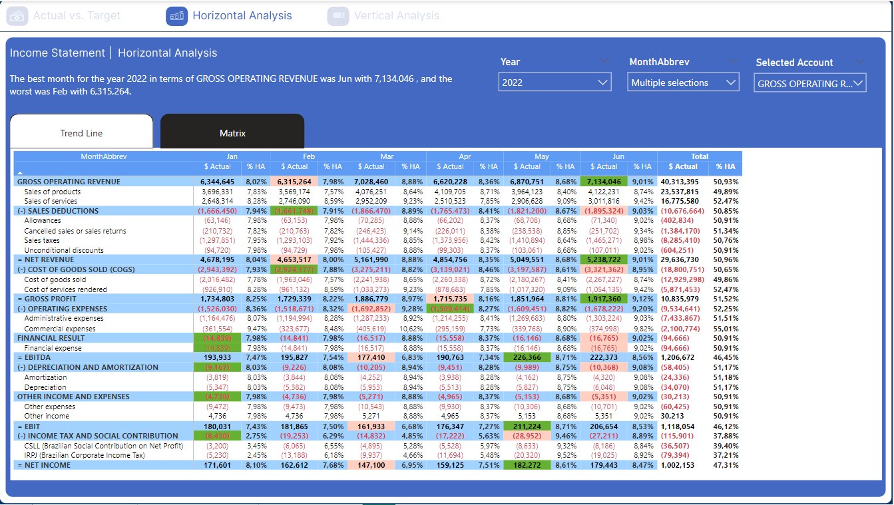
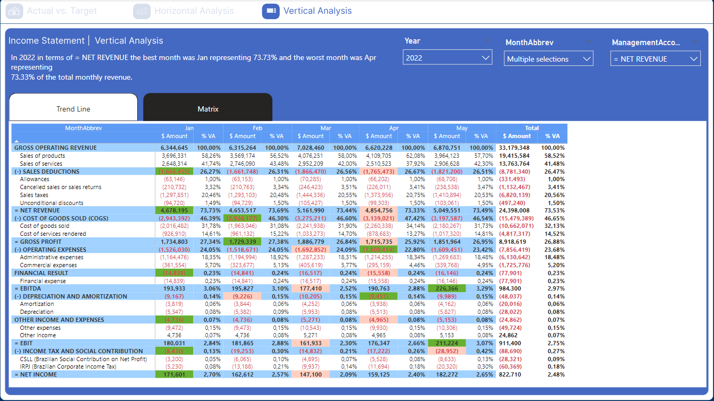
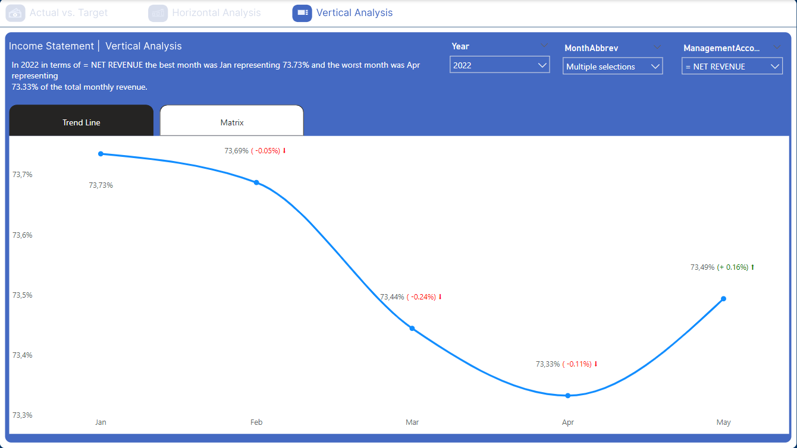

Income Statement
Step 1: Explanation of the Tables
Table Descriptions
dCalendar
The `dCalendar` table stores date information and its various temporal representations. Columns include:
- Date: Date.
- Year: Year.
- MonthNum: Month number.
- MonthAbbrev: Month abbreviation.
- Month/Year: Month/Year.
- HasDate: Checks if there is a corresponding date in the `fBudget` table.
dChartOfAccounts
The `dChartOfAccounts` table defines the chart of accounts. Columns include:
- DescriptionLevel1: Level 1 description.
- DescriptionLevel2: Level 2 description.
- DetailLevel2: Level 2 detail.
- EntryType: Entry type.
- id: Unique identifier.
- IncomeStatementTemplate_id: Income statement template ID.
- Index: Index.
dIncomeStatementShape
The `dIncomeStatementShape` table defines the income statement structure. Columns include:
- Branch: Branch.
- id: Unique identifier.
- Index: Index.
- ManagementAccount: Management account.
- Subtotal: Subtotal.
fBudget
The `fBudget` table stores budget information. Columns include:
- AccrualDate: Accrual date.
- Amount: Amount.
- ChartOfAccounts_id: Chart of accounts ID.
fForecast
The `fForecast` table stores financial forecasts. Columns include:
- AccrualDate: Accrual date.
- Amount: Amount.
- ChartOfAccounts_id: Chart of accounts ID.
fTransactions
The `fTransactions` table stores actual financial transactions. Columns include:
- AccrualDate: Accrual date.
- Amount: Amount.
- ChartOfAccounts_id: Chart of accounts ID.
Step 2: Data Modeling
fBudget Table
Relationships:
- Relationship with dChartOfAccounts: The `fBudget` table relates to the `dChartOfAccounts` table through the `ChartOfAccounts_id` column in `fBudget`, which corresponds to the `id` column in `dChartOfAccounts`. This relationship is used to associate each budget record with its respective chart of accounts.
- Relationship with dCalendar: The `fBudget` table relates to the `dCalendar` table through the `AccrualDate` column in `fBudget`, which corresponds to the `Date` column in `dCalendar`. This relationship allows associating each budget record with a specific calendar date.
fForecast Table
Relationships:
- Relationship with dChartOfAccounts: The `fForecast` table relates to the `dChartOfAccounts` table through the `ChartOfAccounts_id` column in `fForecast`, which corresponds to the `id` column in `dChartOfAccounts`. This relationship is used to associate each forecast with its respective chart of accounts.
- Relationship with dCalendar: The `fForecast` table relates to the `dCalendar` table through the `AccrualDate` column in `fForecast`, which corresponds to the `Date` column in `dCalendar`. This relationship allows associating each forecast with a specific calendar date.
fTransactions Table
Relationships:
- Relationship with dChartOfAccounts: The `fTransactions` table relates to the `dChartOfAccounts` table through the `ChartOfAccounts_id` column in `fTransactions`, which corresponds to the `id` column in `dChartOfAccounts`. This relationship is used to associate each transaction with its respective chart of accounts.
- Relationship with dCalendar: The `fTransactions` table relates to the `dCalendar` table through the `AccrualDate` column in `fTransactions`, which corresponds to the `Date` column in `dCalendar`. This relationship allows associating each transaction with a specific calendar date.
Explanation of Data Modeling
The presented data modeling uses the star schema concept to organize fact and dimension tables, enabling efficient analysis of financial data.
- Dimension Tables (dCalendar, dChartOfAccounts, dIncomeStatementShape): These tables provide detailed descriptions and hierarchies to categorize and describe fact data.
- Fact Tables (fBudget, fForecast, fTransactions): These tables store quantitative and transactional data to be analyzed, such as budgeted, forecasted, and actual amounts.
Relationship between IncomeStatementTemplate and ChartOfAccounts
The relationship between the income statement template (`IncomeStatementTemplate_id`) and the chart of accounts (`ChartOfAccounts_id`) is crucial for ensuring that financial transactions, budgets, and forecasts are correctly categorized and reported.
- Income Statement Template: Defines the structure and layout of the income statement, specifying how different types of transactions should be grouped and presented. This is essential for ensuring that financial reports are consistent and understandable.
- Chart of Accounts: Provides a detailed list of all accounts used in the company's accounting, organizing them according to the structure defined by the income statement template.
By relating these two tables, we ensure that each transaction, budget, or forecast is associated with the correct category, facilitating the creation of accurate and consistent financial reports. This allows financial management to have a clear and detailed view of the company's performance at different levels and accounting categories.
Analysis and Storytelling
Income Statement Dashboard: "Actual vs. Target"
This dashboard provides a comprehensive view of financial performance by comparing actual values with budgeted values for a specific period. It is divided into several key sections and components, each providing specific insights.
Main Sections:
- Top Key Indicators:
- Gross Revenue: Achieved vs. budgeted gross revenue, indicating the best month and variance.
- Net Revenue: Achieved vs. budgeted net revenue, showing the net margin and variance.
- Operating Expenses: Formatted vs. budgeted operating expenses, showing percentage variance and absolute difference.
- Net Income: Achieved vs. budgeted net income, showing the net income margin and variance.
- Income Statement Table:
- Gross Operating Revenue: Detailed by products and services.
- Sales Deductions: Including allowances, returns, sales taxes, and unconditional discounts.
- Net Revenue: Revenue after sales deductions.
- Cost of Goods Sold (COGS): Detailed by the cost of goods and services provided.
- Gross Profit: Profit after deducting COGS.
- Operating Expenses: Detailed by administrative and commercial expenses.
- Financial Result: Including financial expenses and income.
- EBITDA: Earnings before interest, taxes, depreciation, and amortization.
- Depreciation and Amortization: Depreciation and amortization.
- Other Income and Expenses: Other income and expenses.
- EBIT: Earnings before interest and taxes.
- Income Tax and Social Contribution: Income tax and social contribution.
- Net Income: Net income after all costs and expenses.
- Charts and Analyses:
- Monthly Comparison of Actual vs. Budgeted: Monthly comparison of actual vs. budgeted revenue.
- Percentage of Actual vs. Target Achievement by Month: Percentage of actual vs. target achievement by month, highlighting the worst month.
- Monthly Cumulative Actual vs. Target Revenue YTD: Monthly cumulative actual vs. target revenue year-to-date.
Filters and Selections:
- Selections: Allows selecting between budgeted and actual values.
- Year: Allows selecting the year of interest.
- Month: Allows selecting the specific month.
- Branch: Allows selecting the specific branch, e.g., Florianópolis.
Income Statement Dashboard: Horizontal Analysis
This dashboard provides a horizontal analysis of the income statement, allowing a month-to-month comparison of actual and budgeted values for different financial categories throughout the selected year.
Dashboard Components
- Top Key Indicators:
- Dynamic Text: "The best month for the year [Year] in terms of GROSS OPERATING REVENUE was [BestMonth] with [BestMonthRevenue], and the worst was [WorstMonth] with [WorstMonthRevenue]."
- Example in the image: "The best month for the year 2022 in terms of GROSS OPERATING REVENUE was Jun with 7,134,046, and the worst was Feb with 6,315,264."
- Dynamic Text: "The best month for the year [Year] in terms of GROSS OPERATING REVENUE was [BestMonth] with [BestMonthRevenue], and the worst was [WorstMonth] with [WorstMonthRevenue]."
Dynamic Filters
- Filter Selections:
- Year: Allows selecting the year of interest for analysis, e.g., 2022.
- MonthAbbrev: Allows selecting multiple months for detailed analysis.
- Selected Account: Allows selecting the specific account or metric for analysis, such as "GROSS OPERATING REVENUE."
Dynamic Analysis
The dashboard is dynamic, and both the presented data and descriptive texts at the top change based on the applied filters. For example:
- Year: Changing the selected year updates the table and the top text to reflect data for the chosen year.
- Month: Selecting different months allows detailed analysis of specific periods, adjusting the values in the table.
- Selected Account: Changing the selected account or metric updates the analysis to focus on the new chosen metric.
Dynamic Text Example
If the year filter is changed to 2023, the top text might change to:
- "The best month for the year 2023 in terms of GROSS OPERATING REVENUE was July with 7,500,000, and the worst was March with 6,200,000."
This ability to dynamically adjust the data and descriptions provides users with relevant and updated insights, facilitating decision-making based on accurate and current data.
Income Statement Dashboard: Vertical Analysis
This dashboard provides a vertical analysis of the income statement, allowing a detailed comparison of monthly values and their proportions relative to the annual total for different financial categories.
Dashboard Components
- Top Key Indicators:
- Dynamic Text: "In [Year] in terms of = [ManagementAccount], the best month was [BestMonth] representing [BestMonthPercentage]% and the worst month was [WorstMonth] representing [WorstMonthPercentage]% of the total monthly revenue."
- Example in the image: "In 2022 in terms of NET REVENUE, the best month was Jan representing 73.73% and the worst month was Apr representing 73.33% of the total monthly revenue."
- Dynamic Text: "In [Year] in terms of = [ManagementAccount], the best month was [BestMonth] representing [BestMonthPercentage]% and the worst month was [WorstMonth] representing [WorstMonthPercentage]% of the total monthly revenue."
Dynamic Filters
- Filter Selections:
- Year: Allows selecting the year of interest for analysis, e.g., 2022.
- MonthAbbrev: Allows selecting multiple months for detailed analysis.
- ManagementAccount: Allows selecting the specific account or metric for analysis, such as "NET REVENUE."
Dynamic Analysis
The dashboard is dynamic, and the visualizations change based on the applied filters:
- Year: Changing the year updates the top text and table to reflect data for the chosen year.
- Month: Selecting different months adjusts the table to show the values and percentages for those months.
- Selected Account: Changing the selected account or metric updates the analysis to focus on the new chosen metric.
Dynamic Text Example
If the year filter is changed to 2023 and the metric to "GROSS PROFIT," the top text might change to:
- "In 2023 in terms of GROSS PROFIT, the best month was July representing 15.45% and the worst month was March representing 12.34% of the total monthly revenue."
This ability to dynamically adjust the data and descriptions provides users with relevant and updated insights, facilitating decision-making based on a detailed and accurate analysis of monthly proportions relative to the annual total.
In addition to the horizontal analysis matrix, this dashboard also offers the option to view a line chart showing the trend over time. This allows a clear visual analysis of monthly variations in the selected financial indicators.
Conclusion on Vertical and Horizontal Financial Analyses
The vertical and horizontal financial analyses presented in these dashboards provide a comprehensive and detailed view of a company's financial performance over time. Using dynamic tools that adjust data and visualizations based on selected filters, users can easily identify patterns, trends, and monthly and annual variations.
Benefits for Users:
- Deep and Detailed Insights: The ability to switch between different visualizations and metrics allows a deeper understanding of specific financial components, such as revenues, expenses, profits, and operational costs.
- Informed Decision-Making: With accurate and up-to-date analyses, managers can make informed strategic decisions, adjusting their business strategies to improve financial performance.
- Flexibility and Customization: Dynamic filters offer flexibility, allowing users to customize the analysis according to their specific needs, whether by period, financial category, or location.
- Identification of Patterns and Anomalies: Graphical representations, such as line charts and matrices, facilitate the quick identification of performance patterns and anomalies that may require attention or adjustments.
Final Message
Using these dynamic and interactive dashboards not only simplifies financial analysis but also empowers users to act based on accurate and relevant data. Continuous and detailed analysis is essential to maintain the company's financial health and ensure that implemented strategies are aligned with growth and sustainability goals.
This approach allows users to explore and better understand financial data, promoting more effective and data-driven management.